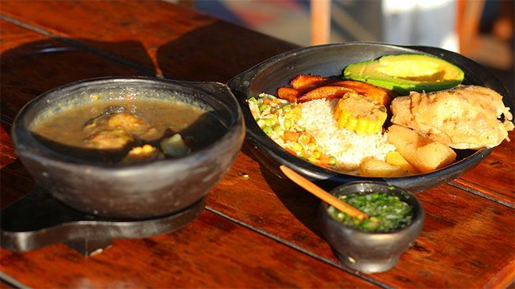
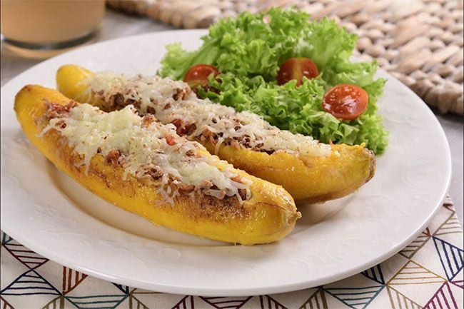

Sancocho
Sancocho
Es uno de los más comunes en la región costera del país, reconocida internacionalmente por su rica cultura y gastronomía. Es una especie de sopa preparada con distintos tipos de carnes, verduras de todo tipo, condimentos y algunas especias (Mazorca, plátano, ahuyama, por ejemplo).
Mondongo
Mondongo
El mondongo es una especie de sopa pero mucho más compleja y que en ocasiones se sirve sola, ya que puede ser un plato bastante pesado para muchos. Se prepara a base de tripa animal y se acompaña con papas colombianas y gran cantidad de verduras.

Platano maduro relleno